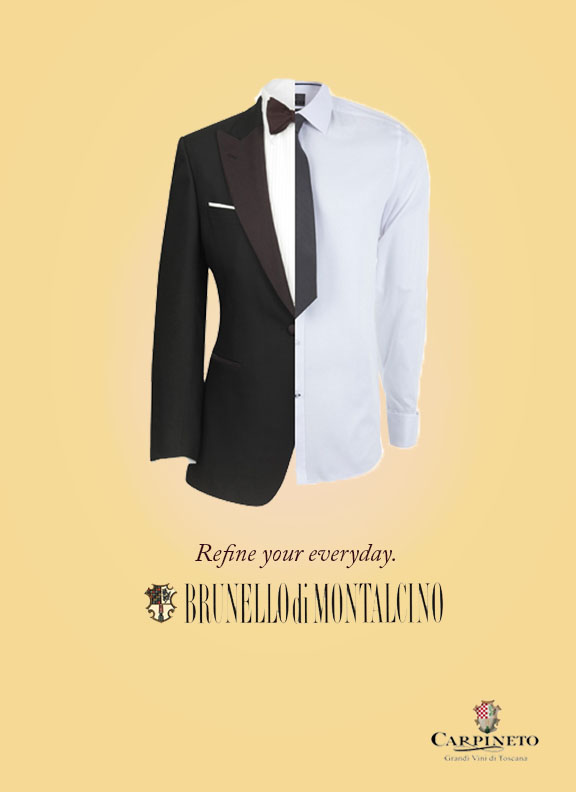
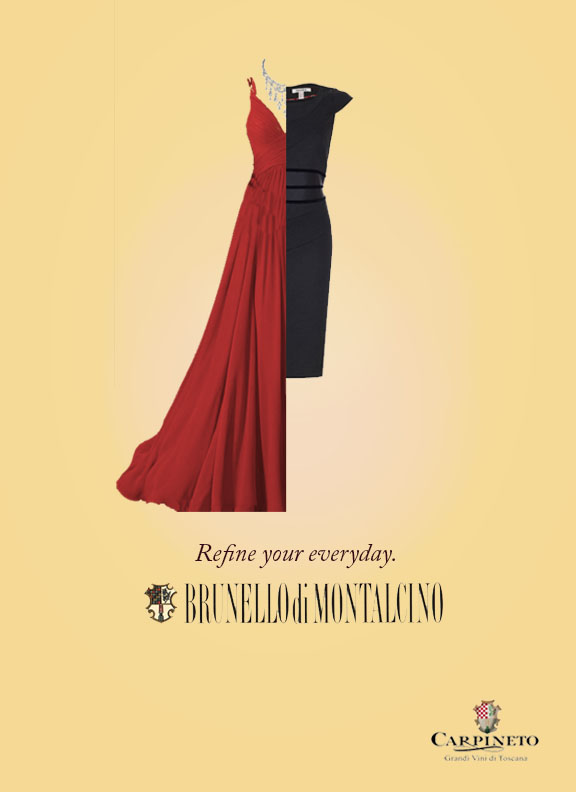
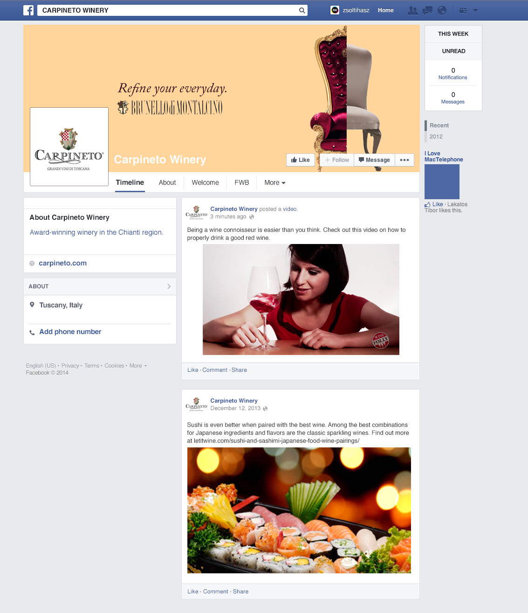
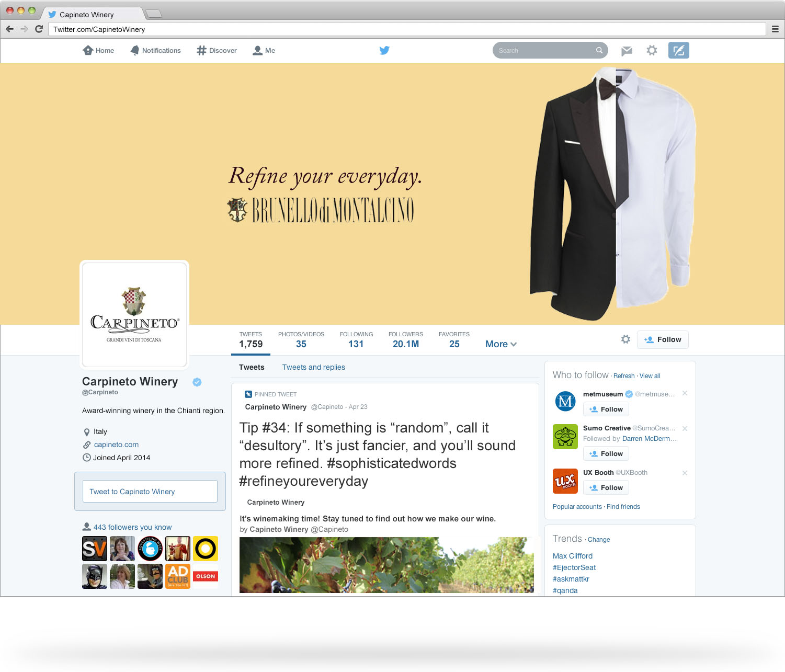

Carpineto Winery
During a summer abroad in Rome, Carpineto Winery challenged the marketing students of American University of Rome to develop a campaign to introduce and increase awareness of their award-winning wines to the American market.
Having the most expensive wine, the campaign "Refine Your Everyday" asks people to improve their days with a bottle of Carpineto's Brunello di Montalcino.
The print ads explore this idea of improving daily ordinary items, while the campaign lives on Facebook, Twitter and Pinterest by posting tips on how to refine your everyday on a budget, food and wine pairings, and the behind-the-scenes of wine production.
The client believed in the campaign as much as we did, and chose to go with this direction.
   